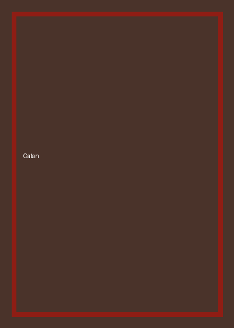

Catan
- Jugadores
- 3 a 4
- Duración
- 75 minutos
- Edad
- Desde 10 años
El clásico de colonización e intercambio. La gracia está en negociar recursos con el resto de la mesa, así que funciona mejor con gente conversadora. La tirada de dados mete azar, pero el resultado depende sobre todo de dónde ubicaste las primeras aldeas.
Descargar reglamento de Catan (PDF)